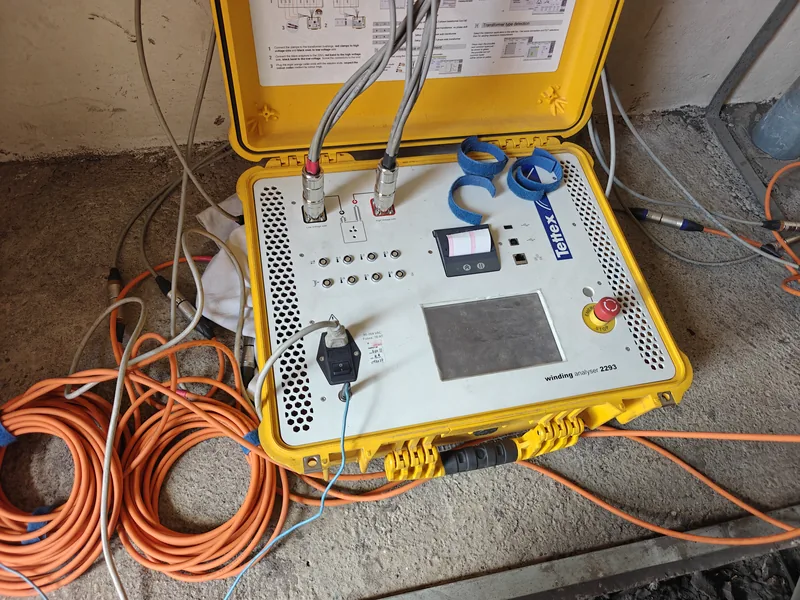

Vršimo sve vrste pregleda i revizija transformatorskih stanica zaključno sa 35 kV. Pregledamo kompletnu transformatorsku stanicu ili samo energetski transformator, uz čišćenje i preventivno održavanje transformatora i stanica.
Sledeća ispitivanja i postupke možemo izvršiti na vašoj lokaciji.

Svi instrumenti i uređaji etalonirani su u Institutu Nikola Tesla iz Beograda.
Pregledi i revizije 24 sata dnevno, 365 dana u godini, uključujući neradne dane i praznike.
Isključenje električne energije blagovremeno organizujemo u ime klijenta sa lokalnom distribucijom dostavljanjem odgovarajućih licenci, BZR i ostale dokumentacije uz prethodni dogovor.
Nakon pregleda i revizije transformatorske stanice dobijate kompletan elektro-finansijsko-vremenski uvid u stanje:
Dokumentacija izvršenih ispitivanja.
Pregled uočenih nepravilnosti.
Budžetiranje otklanjanja uočenih nepravilnosti.
Vremenski okvir za potrebne radove.